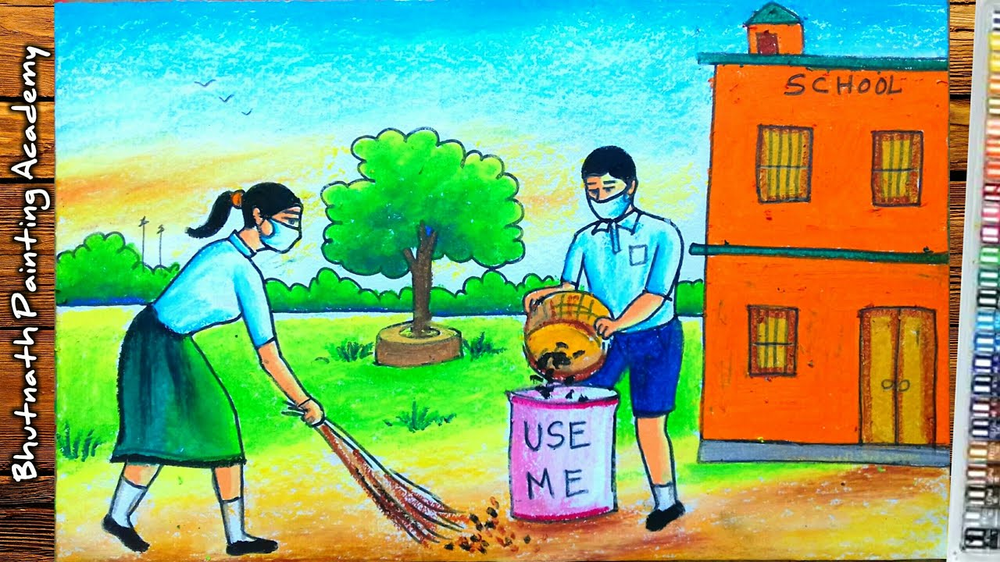
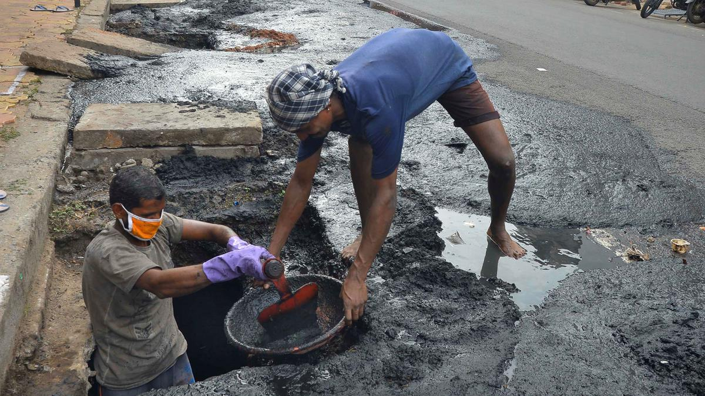
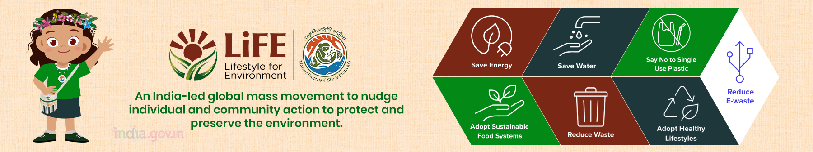

Hello freinds......
kaise ho aap sab
I am MUKESH from gurugram
This is an official Website for our rural and urbans people
These services may vary from country to country and even between different regions within a country. The funding and implementation of government services typically come from
tax revenues and budget allocations. Governments continuously work to improve and adapt their services to meet the changing needs of their citizens. Government services encompass a wide range of services provided by various levels of government
(local, state/provincial, and national) to citizens and businesses. These services are designed to meet the needs of the public and provide essential support and resources in areas such as education, healthcare, transportation, public safety,
social welfare, and more. Here are some key aspects related to government services:
- Education Services
- Transportation Services
- Public Safety Services
Some more services are there ....